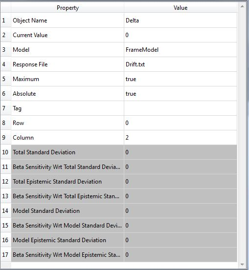

File Response
Class Name
Location in Objects Pane
- Models > Parameter > Response > File
Properties

Object Name
- Name of the object in Rt
- Allowable characters are upper-case and lower-case letters, numbers, and underscore (“_”).
- The name is unique and case-sensitive.
Current Value
- Current realization of the model response
Model
Response File
- Absolute or relative path to the location of the response file
Maximum
- Determines whether the maximum value of the file should be read and used.
Absolute
- Determines whether the absolute value of the outputs in file should be used.
Tag
- If a an expression is assigned as the Tag, Rtx will find that expression in the file and start searching from that point onwards.
Row
- The location of parameter in text file rows, if enter "0" in the blank, all rows will be derived from the text file.
Column
- The location of parameter in text file columns, if enter "0" in the blank, all columns will be derived from the text file.
Read-only Properties
Total Standard Deviation
- Total standard deviation of file response object
Beta Sensitivity Wrt Total Standard Deviation
- Derivative of the reliability index, \({\beta}\), with respect to the total standard deviation of this file response object
Total Epistemic Standard Deviation
- Total epistemic standard deviation of file response object
Beta Sensitivity Wrt Total Epistemic Standard Deviation
- Derivative of the reliability index, \({\beta}\), with respect to the total epistemic standard deviation of this file response object
Model Standard Deviation
- Standard deviation of the model used to extract file response object
Beta Sensitivity Wrt Model Standard Deviation
- Derivative of the reliability index, \({\beta}\), with respect to the model standard deviation of this file response object
Model Epistemic Standard Deviation
- Epistemic standard deviation of the model used to extract file response object
Beta Sensitivity Wrt Model Epistemic Standard Deviation
- Derivative of the reliability index, \({\beta}\), with respect to the model epistemic standard deviation of this file response object
Output
Right-click Menu
Remove